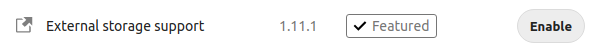
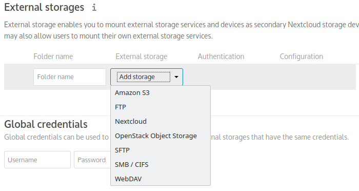
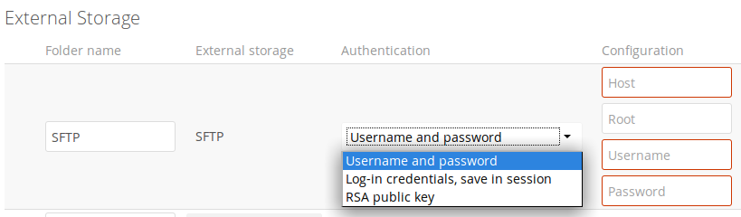
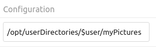
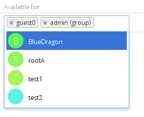
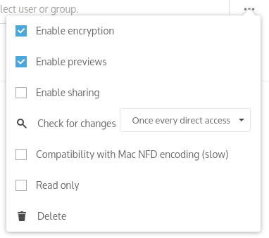
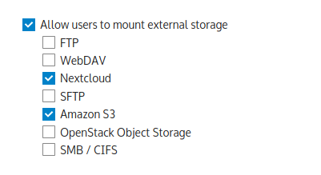

External Storage
The External Storage Support application enables you to mount external storage services and devices as secondary Nextcloud storage devices. You may also allow users to mount their own external storage services.
Enabling
External Storage Support is provided by a bundled (automatically installed) app. It is disabled by default, so to use this feature you simply need to enable it under Apps.

Configuring
To access the settings for configuring external storage mounts, click your Profile icon and select Settings from the dropdown. On the left side, under Administration, select External Storage.
Note
External storage can also be configured via the occ command. See occ documentation.
To create a new external storage mount, select an available backend from the Add storage dropdown. Each backend has different required options, which are configured in the configuration fields.

Each backend may also accept multiple authentication methods. These are selected with the dropdown under Authentication. Different backends support different authentication mechanisms; some are specific to the backend, while others are more generic. See External Storage authentication mechanisms for more detailed information.
When you select an authentication mechanism, the configuration fields change as appropriate for the chosen mechanism. For example, the SFTP backend supports Username and password, Log-in credentials, save in session, and RSA public key.

Required fields are marked with a red border. When all required fields are filled, the storage is automatically saved. A green dot next to the storage row indicates the storage is ready for use. A red or yellow icon indicates that Nextcloud could not connect to the external storage, so you need to re-check your configuration and network availability.
If there is an error on the storage, it will be marked as unavailable for ten minutes. To re-check it, click the colored icon or reload your Admin page.
Folder name
The Folder name is the name the folder will have within Nextcloud - the
name that will be visible to NextCloud users.
Note that the folder name cannot include a path or subdirectory - do not
include slashes in your Folder name.
Usage of variables for mount paths
The external storage mounting mechanism accepts variables in the mount path.
Use $user for automatic substitution with the logged-in user’s username.
Use $home for automatic substitution with a configurable home directory variable
(requires LDAP; see Special attributes in the LDAP configuration documentation for details).
In the following example, the mount point for a logged-in user “alice” would resolve
to /opt/userDirectories/alice/myPictures.

User and Group Permissions
A storage configured in a user’s personal settings is available only to the user who created it. A storage configured in the Admin settings is available to all users by default, but it can be restricted to specific users and groups in the Available for field.

Mount Options
The overflow menu (three dots) exposes the settings and trashcan icons. Click the trashcan to delete the mount point. The settings button allows you to configure each storage mount individually with the following options:
Encryption
Previews
Enable Sharing
Filesystem check frequency (Never, Once per direct access)
Mac NFD Compatibility
Read Only
The Encryption checkbox is visible only when the Encryption app is enabled. Note that server-side encryption is not available for other Nextcloud servers used as external storage.
Enable Sharing allows the Nextcloud admin to enable or disable sharing on individual mount points. When sharing is disabled, the shares are retained internally so that you can re-enable sharing and the previous shares become available again. Sharing is disabled by default.

Using Self-Signed Certificates
When using self-signed certificates for external storage mounts, the certificate must be imported into the personal settings of the user. Please refer to Nextcloud HTTPS External Mount for more information.
Available Storage Backends
The following backends are provided by the external storages app.
Note
A non-blocking or correctly configured SELinux setup is needed for these backends to work. Please refer to SELinux configuration.
Allow Users to Mount External Storage
Check Enable User External Storage to allow your users to mount their own external storage services, and check the backends you want to allow. Beware, as this allows a user to make potentially arbitrary connections to other services on your network!

Adding files to external storage
We recommend configuring the background job Webcron or Cron (see Background jobs) to enable Nextcloud to automatically detect files added to your external storages.
Nextcloud may not always be able to detect changes made remotely (files changed without going through Nextcloud), especially when files are located deep in the folder hierarchy of the external storage.
You might need to set up a cron job that runs sudo -E -u www-data php occ files:scan --all
(or replace --all with the username; see also Using the occ command)
to trigger a rescan of the user’s files periodically (for example, every 15 minutes), which includes
the mounted external storage.
If you are running Nextcloud AIO, the equivalent command
in that environment is sudo docker exec --user www-data -it nextcloud-aio-nextcloud php occ files:scan --all.
Troubleshooting File Name Encoding
When using external storage, it can happen that some files with special characters will not appear in the file listing, or they will appear but not be accessible.
When this happens, please run the files scanner, for example:
sudo -E -u www-data php occ files:scan --all
If the scanner reports an encoding issue on the affected file, please enable Mac encoding compatibility in the mount options and then rescan the external storage.
Note
This mode comes with a performance impact because Nextcloud will always try both encodings when detecting files on external storages.
Mac computers use the NFD Unicode normalization for file names, which is different from NFC, the one used by other operating systems. Mac users might upload files directly to the external storage using NFD-normalized file names. When uploading through Nextcloud, file names will always be normalized to the NFC standard for consistency.
It is recommended to let Nextcloud use external storages exclusively to avoid such issues.
See also the technical explanation about NFC vs NFD normalizations.